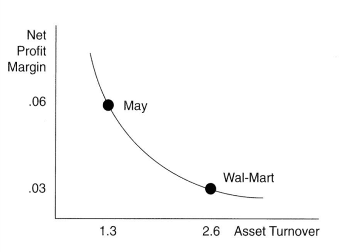
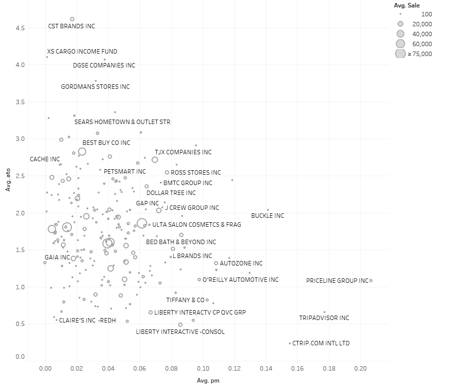

Benchmarking Company Performance
Analytic Mindset Keywords:
Ratio Analysis; Comparability; Benchmarking; Financial Accounting.
Analytic Skillsets Keywords:
Data Visualization.
Contents
Analysis of performance using the basic and advanced DuPont ratios 4
The usefulness and limitations of ratio analysis 8
Supplementing ratio analysis with accounting analysis 9
Selecting and calculating a benchmark 9
Case Brief
How can we determine if Amazon is outperforming their benchmark?
You are a consultant who has been asked to evaluate the financial performance of Amazon over the past 5 years relative to expected performance. You have been approached due to your accounting analysis skills and your analytical approach to selecting and constructing benchmarks using accounting information.
Broadly speaking this case is about the comparability of financial ratios. You are to provide a set of analyses that focuses on selecting appropriate benchmarks to compare Amazon’s performance using standard financial ratios. In completing this case you must provide a summary of the reasons you selected your primary benchmark and a discussion of the relative performance of Amazon.
You will have the opportunity to discuss the rationale for and the practicalities of your conclusions in your response and in class. Your conclusions are to be backed up with analysis of data (in this case selection of a benchmark firm and ratio analysis). There are a significant number of potential benchmarks to choose, to answer the case brief, however, you are required to select a single benchmark.1
Background
Equity investors aim to use current period accounting data to predict future economic outcomes that enable them to assess the value of equity. Investors combine information about current period sales, current period margins, and current period asset utilization to forecast future sales, profitability, and asset balances of the firm. The DuPont analysis provides a framework for analyzing and forecasting firm profitability using the product of profit margin (as a measure of profitability) and asset turnover (as a measure of asset utilization).
Performance evaluation and accounting information: Since 1890, a central principle to understand how value is created by a business is the concept that firms add value when they grow and earn a return on capital that exceeds their cost of capital.2 Accounting reports provide inputs to measure performance, including income measures that are used to measure economic return and asset measures that are used to measure economic capital. Thus ratios of accounting income to accounting assets allow for estimates of a firm’s return on capital. These ratios can be assessed in terms of cost of capital either through estimating cost of capital (using market returns) or through comparing to a benchmark, which is the focus of this case.
Ratio analysis
Ratio analysis is a routine part of financial statement analysis that involves the calculation of various measures using accounting information that can be informative to numerous decision making tasks including performance evaluation and risk assessment. Calculating ratios is relatively easy, and can be incorporated automated using spreadsheets or other software to calculate ratios for many firms efficiently. Interpreting the ratios, however, is the challenge. Specifically, what is the appropriate benchmark? In this case you will calculate ratios for Amazon and work through a number of analytical approaches to find and construct a benchmark. In the case discussion we will discuss the trade-offs between the approaches, and what we learn about Amazon’s relative performance.
Sourcing Data
The Securities and Exchange Commission (SEC) requires publicly traded firms to file a 10-K annually, and the 10-Q quarterly. Among other disclosures, the 10-K (and 10-Q) includes financial statements (the balance sheet; income statement and cash-flow statement) which provide significant amounts of numerical accounting data. This is generally the source of data that is used for ratio analysis. Filings can be downloaded from the SEC’s Electronic Data Gathering and Retrieval (EDGAR) service.3
A number of data providers collect and categorize the information in the 10-K and 10-Q allowing for a structured data set. Note that some charge a significant fee and others provide part of the data for free (see Yahoo! Finance for example). As such, financial data can be considered as structured data, but don’t let this fool you into thinking that all financial statements are identical in how they report the inputs used in ratio analysis; there is considerable variation in how firms report their financial results.
Accounting Analytics
Analysis of performance using the basic and advanced DuPont ratios
The DuPont ratios are used to measure performance. The DuPont decomposition is a well-known ratio analysis, which decomposes return on assets into profit margin and asset turnover. It has been used by DuPont since the early 1900s and began gaining popularity following Pierre DuPont’s successful turn-around of General Motors in the 1920s using the DuPont decomposition in their managerial accounting system.
The Basic DuPont Ratios: The (Basic) DuPont ratios provide a method for decomposing return on assets. Specifically:
,
(1)
where, ROA is return on assets, PM is profit margin, and ATO is asset turnover.
The Advanced DuPont Ratios: A commonly used accounting metric, return on equity (, can also be decomposed using the DuPont approach. It is typically referred to as the “Advanced DuPont” due to the additional steps required in the decomposition. The Advanced DuPont is written as:
,
(2)
where is return on net operating assets, is financial leverage, or net financial assets, and is the (net) rate of return on net financial assets. The advanced DuPont then decomposes RNOA:
(3)
where is operating profit margin and is the net operating asset turnover. The primary benefit of using the Advanced DuPont ratios is that they capture the firm’s operating profitability after removing the effects of financial leverage. Abstracting away from the effects of financing allows the analyst to focus on the drivers of operating profitability.
Margin and turnover ratios can be further decomposed to provide additional information about the firm. For example, the margins of a firm can be calculated by only including certain expense line-items, such as calculating the Gross Margin as Gross Profit divided by Revenue. In addition, some items are transitory in nature, and only affect the profitability of the firm in the current year, such as the net proceeds from the sale of a division. These items are not expected to recur in the future and are typically excluded from measuring performance by the analyst who is interested in profit before “non-recurring items.” Turnover ratios can be calculated to focus on the utilization of specific assets, like accounts receivable and inventory.
Measuring DuPont ratios with accounting inputs: Ratios that use accounting inputs, such as the DuPont ratios, are a function of both economic forces and accounting measurement. In terms of economic forces, margins can be interpreted as measures of pricing power (how much the firm can charge over cost for their products and services), and turnover ratios can be considered as measures of asset utilization (how well the firm can produce and deliver their products and services given the amount of productive assets available to them). Changes in asset turnover indicate changes in the productivity of assets, and to the extent that return on assets is not easily imitated by competitors, these changes in productivity are likely to be persistent.
Some stylized observations about DuPont ratios: A well-known feature of the DuPont ratios is that they generally aid in identifying how two companies operating with different business strategies could have similar return on assets. Figure 1 provides a stylized example of the retailers Wal-Mart and May both achieving ROA of 7.8% but achieve this with very different profit margins and asset turnover. Historically, these differences are associated with a firm’s strategy. Firms which can sustain high profit margins are often associated with a “price differentiator” strategy (e.g. Mays), whereas firms with high asset turnovers are typically associated with a “cost leadership” strategy (e.g. Walmart).
Figure 1
A stylized representation of the link between the DuPont ratios and firm strategy

Notes: The example above is a stylized representation of how the decomposition of ROA using the (basic) DuPont ratios can be associated with firm strategy. In general, it is considered very challenging to be both a high profit margin firm and a high turnover firm. The convexity in the line linking the two points is consistent with this theory.
Retail industry DuPont ratios: Figure 2 provides calculations of asset turnover and profit margin for public firms in the retail industry. Although the real data is messier than the theory (no surprise here) some of the a stylized example of firms sustaining high profit margins those with the “price differentiator” strategy can be seen toward the bottom right, whereas firms with high asset turnovers are typically associated with a “cost leadership” strategy can be seen in the top left corner of the figure. Importantly, the top right corner of the figure is unpopulated, consistent with the theory that firms need to make a choice between being a price differentiator and a cost leader, i.e., it is not possible to be both.
Figure 2
DuPont ratios for firms in the internet and catalog retail industry

Notes: The figure above plots the decomposition of ROA using the (basic) DuPont ratios for the internet and catalog retail industry (GICS code 255020). In general, it is considered very challenging to be both a high profit margin firm and a high turnover firm. The convexity in the line linking the two points is consistent with this theory.
The usefulness and limitations of ratio analysis
Ratio analysis can provide a starting point to understanding how a firm’s external competitive environment and business strategy are reflected in their financial statements. Ratio analysis is designed to aid in the comparison of companies of different sizes. The strengths of ratio analysis include that ratios are easy and fast to calculate and can be used to compare companies on multiple dimensions, including performance and risk. Ratio analysis, however, should not be used in isolation for the following reasons:
Benchmarks: To understand ratios, a benchmark is required. Benchmarks allow for the comparison of a performance (or risk) measure to a target level. Selecting an appropriate benchmark can be challenging and selecting a poor benchmark lowers the usefulness of ratio analysis.
Accounting measurement: Accounting information can be prepared using different measurement approaches and this can lead to ratios that are not comparable without adjusting the accounting basis. In terms of measurement, for example, there are multiple approaches to measuring revenues, which often vary based on the type of product or service being offered. Other examples include differences inventory and depreciation measurements and choices relating to accounting for leases.
Accounting classification: As accounting provides an aggregation of many similar transactions into various line-items it is important to understand differences in the classification of various transactions between companies. For example, stock-based compensation is often classified into general and administrative expense, R&D expense, advertising expense, and cost of sales.
One-time events: Transactions that are the result of a one-time event (such as litigation, divestitures, impairments, acquisitions, and restructuring) directly impacts the measurement of a firm’s performance. These events, however, make ratios less useful when attempting to: (1) compare with other firms in the industry that are not affected by the same event; (2) compare a firm to their historical performance; and (3) forecast future firm performance.
Supplementing ratio analysis with accounting analysis
Accounting analysis can help overcome some of the weaknesses in ratio analysis. Specifically, the detail in the 10-K (or 10-Q), including the detail in the footnotes, allows for the identification of differences in accounting measurement between companies, differences in classification of similar transactions, and the effect of one-time events on various ratios. In these cases, it is feasible to make corrections to ratios by using accounting analysis and recalculating financial ratios after recasting or restating the financial information. It is not feasible to make corrections to ratios even if we are aware of differences between firms that are driven by accounting. For example, Curtis et al. (2015) provide evidence that the comparability of the asset turnover ratio is lowered due to historical cost accounting and inflation when firms purchase assets at different points in time (think of real estate purchased in Seattle before Amazon’s expansion versus the costs now). In this case there is not an easy way to recast the accounting assets of different firms from their historical cost to a comparable basis, as we do not know the exact effect of inflation on the assets of the firm.4
Selecting and calculating a benchmark
There are several approaches that can be used to calculate a benchmark. The discussion below outlines the following five approaches, (1) heuristics, (2) historical comparisons, (3) peer comparisons, (4) industry comparisons, and (5) synthetic comparisons.
Heuristics or “rules of thumb” are often based on a logical argument that a certain level of performance is “good” and performance below this level is bad. For example, an ROA below zero could be considered “bad” performance, as it indicates that the firm is making a loss. The usefulness of heuristics is quite limited, however, and rely on a working knowledge of “logical benchmarks.”
Historical comparisons can be an effective tool in using the firm’s prior performance as a benchmark. These comparisons can be made quickly by calculating the firm’s ratios over several years. Plotting ratios over time allows for the identification of trends and unusual years, making them visually appealing.
Peer comparisons are based on comparing the ratios of the target company with those of a similar company. Usually, the peer is selected from the same industry and is of a similar size. The goal is to identify a peer that faces similar risks and rewards. The benefit of these comparisons is that they incorporate current information into the benchmark, the limitations are that they rely on the quality of the peer chosen as the benchmark firm. Peers are often selected from the same industry, when they are of a similar size (such as market capitalization) and when they are subject to similar business risks (often measured as having similar book-to-market ratios).
Bhojraj and Lee (2002) present an approach to estimate a peer firm based on selecting the firm with the closest “warranted multiple” based on valuation theory and estimates from a large sample of firms. In their paper, they identify that the linear combination of the industry mean of enterprise value to sales, abnormal profit margins, the size of a firm’s loss, abnormal expected growth, the return on net operating assets and R&D expenditures allows for the construction of the “warranted multiple.”
Industry comparisons are based on comparing the ratio of the target firm to the ratios in the same industry. The simplest approach is to calculate the average ratio for the industry and use this as the benchmark. Further, industry comparisons incorporate a much larger amount of data in the analysis and facilitate comparisons such as ranking the target firm in their industry.
Industry comparisons can be modified by using a weighted average (often calculated by weighting each firm by their market capitalization), or by only including in the average firms that are of a similar market size. Other weights could also be used.
Synthetic comparisons are based on constructing the benchmark from an explicit model of the risks and rewards faced by the target firm. This approach is data intensive and requires additional thought on what the drivers of the target firm’s risk and rewards are, and what other firms face these same risks and rewards. Synthetic comparisons are useful when a firm spans multiple industries, as in these cases it overcomes the limitations of the industry comparisons. For example, if the target firm provides sufficient segment disclosure then it is possible to construct an industry weighted benchmark. There is little research into the value of a synthetic benchmark; however, recent advances in econometric modelling provide the necessary technology to estimate a synthetic benchmark (Abadie et al. 2015).
Application to Amazon
Who is Amazon’s peer? Amazon, headquartered in Seattle is an online retailer and content provider. Amazon’s Corporate Mission is “We seek to be Earth’s most customer-centric company for four primary customer sets: consumers, sellers, enterprises, and content creators.”5 It has a membership based service, Amazon Prime, which allows members free access to shipping of goods purchased on Amazon, and online content.
Amazon is classified by The Global Industry Classification Standard (GICS)6 into the “Consumer Discretionary” Sector and the “Internet & Catalog Retail” industry. The GICS code is 255020, and the GICS code for the subindustry “Internet retail” is 25502020. In recent years, however, Amazon’s increased market share in the data processing industry has been increasing with their cloud computing service Amazon Web Services (AWS).
The FANG (and FAANG): is recently adopted acronym created by Jim Cramer of TheStreet and Mad Money. The FANG acronym refers to the Facebook (FB), Amazon (AMZN), Netflix (NFLX) and Google (GOOG, GOOGL).7 The FAANG acronym includes Apple (APPL), a more established company. These companies share that they are among the most popular and (in terms of market returns) best performing technology stocks in recent years that share a heavy emphasis on data-driven business models. Could these firms serve as an appropriate benchmark to assess Amazon’s performance?
Compensation benchmarking: In addition, Amazon discloses peer firms that are used in to benchmark their executive compensation practices in the “Compensation Discussion and Analysis” section of their DEF 14A filing.8 The firms identified are described in the following paragraph:
“Except for Mr. Olsavsky, the named executive officers did not receive any new equity awards in 2015. In evaluating the compensation of our named executive officers in 2015, the Leadership Development and Compensation Committee considered the vesting schedule of existing equity awards as well as aggregated information from third party surveys, including compensation data for retail, internet, and technology companies including AOL, Apple, Best Buy, Cisco, Dell, eBay, Facebook, Google, Honeywell, IBM, Intel, Microsoft, Oracle, Starbucks, Target, Verizon, and Yahoo. The Leadership Development and Compensation Committee exercises discretion in determining executive officers’ compensation and does not require that compensation be set at a specific level relative to what is reflected in the survey data.”
This provides some insight into the firms that Amazon considers as peer firms at least for the purposes of considering how to compensate their executives.
Data and Resources
The following data and resources are available in the case supplement:
Industry data for GICS code 2550.
References
Abadie, A., A. Diamond, and J. Hainmueller. 2015. Comparative Politics and the Synthetic Control Method. American Journal of Political Science 59 (2):495-510.
Allee, K., J. Campbell, A. Curtis, J. Hales, B. Jorgensen, S. Krische, L. Rees, J. Sunder, and C. Wang. 2015. Response to the IASB Invitation to Comment: Conceptual Framework for Financial Reporting (ED/2015/3).
Bhojraj, S., and C. M. C. Lee. 2002. Who Is My Peer? A Valuation-Based Approach to the Selection of Comparable Firms. Journal of Accounting Research 40 (2):407-439.
Curtis, A., M. F. Lewis-Western, and S. Toynbee. 2015. Historical Cost Measurement and the Use of DuPont Analysis by Market Participants. Review of Accounting Studies 20 (3):1210-1245.
Acknowledgements: This case is based on an earlier case written by Asher Curtis in April 2014. Revised March 2015, October 2016, October 2017, and September 2020.
Footnotes
We should anticipate that there will be multiple answers in the class; in addition to describing your benchmark choice in class, your task will be to defend the choices you made in selecting your benchmark. Note that the term benchmark is broader than a single firm, see the section Selecting and calculating a benchmark beginning on page 8.
↩Alfred Marshall is generally credited with this insight based on his book Principles of Economics, published in 1890.
↩https://www.sec.gov/edgar/searchedgar/companysearch.html
↩Inflation is a larger issue internationally than in the US. The International Accounting Standards Board (IASB), however, deferred plans to address the issue of inflation rather than include this as part of the 2015 Conceptual Framework Exposure Draft. See the responses to Question 8 and 9 in Allee et al. (2015) for further discussion of how the usefulness of accounting information is affected by inflation.
↩From Amazon’s Investor Relations website: http://phx.corporate-ir.net/phoenix.zhtml?c=97664&p=irol-irhome retrieved March 16, 2015.
↩GICS was developed by and is the exclusive property and a service mark of MSCI Inc. (“MSCI”) and Standard & Poor’s Financial Services LLC (“S&P”) and is available for academic use through the UW subscription to Compustat.
↩Google know known as Alphabet, trades under the two stock tickers: GOOG (Share Class C) and GOOGL (share class A). Share Class C does not have voting rights.
↩The DEF 14A is the Definitive Proxy Statement, filed before a firm’s annual shareholders meeting. It covers compensation as well as other governance matters and issues on which shareholder are to vote.
↩